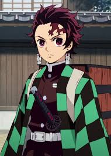

Tanjirō Kamado
nacion: 14 de julio
Edad: 13-17
es el protagonista de la serie de manga y anime Kimetsu no Yaiba. Tanjiro es un adolescente que emprende una búsqueda para restaurar la humanidad de su hermana, Nezuko, quien se convirtió en un demonio después de que su familia fuera asesinada por Muzan Kibutsuji. Después de un encuentro con Giyu Tomioka, un cazador de demonios. Por él es reclutado para convertirse también en un cazador para ayudar a su hermana a volverse humana de nuevo y vengar a su familia. leer mas